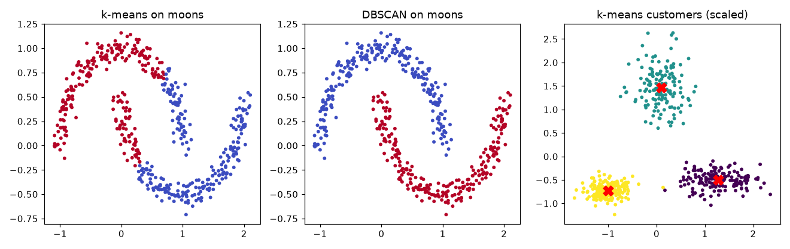
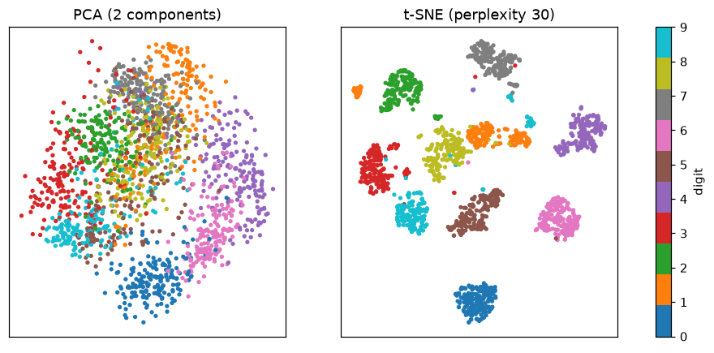
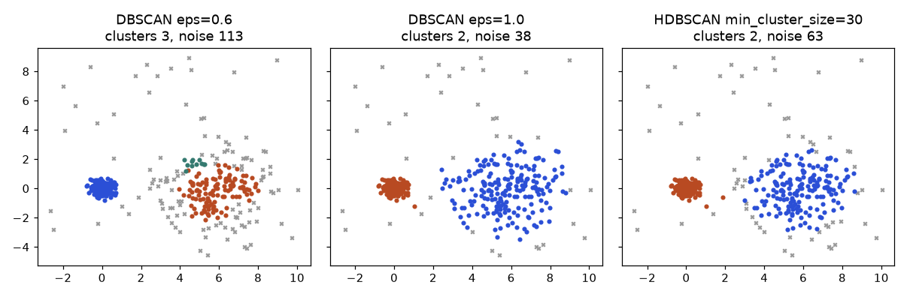

Most data in the world has no answer column. A shop has 500 customers and nobody has labelled them "bargain hunter" or "big spender". A hospital has 1,800 scanned digits and no time to read them all. A supermarket has a million baskets and wants to know what is bought together. Unsupervised learning looks only at the inputs x and searches for structure: groups, directions of variation, or frequent combinations. By the end of this chapter you will be able to cluster customers with k-means (and check whether the result is real), choose between k-means, hierarchical clustering, DBSCAN and Gaussian mixtures for a given shape of data, compress 64 features to 20 with PCA and measure what you lost, read a t-SNE picture without being fooled, and mine "if bread then butter" rules with support, confidence and lift. The warning for the whole chapter: there is no ground truth, so every result needs validation and a business interpretation.
All outputs below come from real runs (numpy, pandas, scipy, scikit-learn 1.9.1, fixed seeds). Distances, matrices, eigenvectors and probability are in the learner's Math PDF (Pillars 1 and 4 for linear algebra and probability); Chapter 1 introduced the unsupervised family and the curse of dimensionality. UMAP (umap-learn) and mlxtend are not installed here, so those parts are explained but marked "not run here".
k groups and each group is summarised by its mean.| Word | Meaning |
|---|---|
| Cluster | A group of rows that are close to each other |
| Centroid | The mean point of a cluster |
| Inertia | Sum of squared distances from each row to its centroid; smaller means tighter clusters |
| Silhouette | A score from −1 to 1 for how well a row fits its own cluster compared with the next-nearest cluster |
| ARI | Adjusted Rand Index; compares two labelings, 1 is identical, near 0 is random. Used when true labels exist |
500 shop customers with two features: annual spend (in thousands) and visits per month. We secretly built three groups: occasional (200 customers: spend about 10, 2 visits), regular big spenders (150: spend 40, 3 visits) and frequent visitors (150: spend 25, 12 visits). The algorithm does not see the groups.
The objective is inertia = Σ over clusters Σ over rows in cluster ‖x − centroid‖². Both steps reduce inertia or leave it unchanged, so the algorithm always stops, but only at a local minimum, which depends on the start. k-means++ picks starting centroids far apart: the first at random, each next one with probability proportional to its squared distance from the nearest chosen centroid. It is the default in scikit-learn.
Problem 13.1.1 One full k-means pass by hand. Six numbers: 1, 2, 3, 10, 11, 15; k = 2; start centroids 1 and 10.
| Step 1 (assign) | Distance to 1 versus 10: for 1: 0 vs 9, cluster A; 2: 1 vs 8, A; 3: 2 vs 7, A; 10: 9 vs 0, B; 11: 10 vs 1, B; 15: 14 vs 5, B. |
|---|---|
| Step 2 (update) | A = {1, 2, 3}, mean 2. B = {10, 11, 15}, mean 36 / 3 = 12. |
| Step 3 (assign again) | For 3: |3 − 2| = 1 versus |3 − 12| = 9, A. For 10: 8 versus 2, B. Nobody moves, so we stop. |
| Answer | Centroids 2 and 12. Inertia = (1 + 0 + 1) + (4 + 1 + 9) = 16. |
| Check | ((x[:3]-2)**2).sum() + ((x[3:]-12)**2).sum() in numpy gives 16.0. |
| Why it matters | Every pass is just "nearest centroid, then average": nothing else. |
import numpy as np
from sklearn.preprocessing import StandardScaler
from sklearn.cluster import KMeans
from sklearn.metrics import adjusted_rand_score
rng = np.random.default_rng(0)
C = np.array([[10, 2], [40, 3], [25, 12]]); sizes = [200, 150, 150]; sd = [[3, 0.6], [6, 0.8], [4, 2.0]]
X = np.vstack([rng.normal(C[i], sd[i], (sizes[i], 2)) for i in range(3)]); true = np.repeat([0, 1, 2], sizes)
Xs = StandardScaler().fit_transform(X) # scale first (see below)
def kmeans(X, k, seed=0, iters=100):
r = np.random.default_rng(seed)
cen = [X[r.integers(len(X))]] # k-means++ start
for _ in range(k - 1):
d2 = np.min(((X[:, None] - np.array(cen)[None])**2).sum(2), 1)
cen.append(X[r.choice(len(X), p=d2 / d2.sum())])
cen = np.array(cen)
for it in range(iters):
lab = ((X[:, None] - cen[None])**2).sum(2).argmin(1) # assign
new = np.array([X[lab == j].mean(0) if (lab == j).any() else cen[j] for j in range(k)]) # update
if np.allclose(new, cen): break
cen = new
return lab, cen, ((X - cen[lab])**2).sum(), it + 1
lab, cen, inertia, it = kmeans(Xs, 3)
km = KMeans(3, n_init=10, random_state=0).fit(Xs)
print("scratch inertia", round(inertia, 2), "iters", it)
print("sklearn inertia", round(km.inertia_, 2), "ARI vs scratch", round(adjusted_rand_score(lab, km.labels_), 3),
"ARI vs truth", round(adjusted_rand_score(true, km.labels_), 3))
print(StandardScaler().fit(X).inverse_transform(km.cluster_centers_).round(1).tolist())scratch inertia 84.2 iters 2
sklearn inertia 84.2 ARI vs scratch 0.994 ARI vs truth 0.988
[[40.1, 3.0], [24.5, 11.8], [9.8, 2.0]]My scratch version and scikit-learn reach the same inertia (84.2); ARI 0.994 between them and 0.988 against the hidden truth (1.0 is perfect). The centroids, converted back to original units, are (spend 40.1, visits 3.0), (24.5, 11.8), (9.8, 2.0): the three groups we planted. Here the groups are well separated, so the algorithm needs only 2 passes.
k-means uses distances. If spend is measured in rupees (about 10,000 to 40,000) and visits are 2 to 12, spend swamps visits.
X2 = X.copy(); X2[:, 0] *= 1000 # spend in rupees
for nm, Z in [("raw rupees", X2), ("scaled", StandardScaler().fit_transform(X2))]:
m = KMeans(3, n_init=10, random_state=0).fit(Z)
print(nm, "ARI vs truth", round(adjusted_rand_score(true, m.labels_), 3))raw rupees ARI vs truth 0.83
scaled ARI vs truth 0.988Without scaling, the visit counts are practically ignored and the frequent visitors merge with others (ARI 0.83). After scaling the three groups are recovered (0.988).
There is no "right" k, only useful ones. Four tools:
from sklearn.metrics import silhouette_score, davies_bouldin_score, calinski_harabasz_score
for k in range(2, 8):
m = KMeans(k, n_init=10, random_state=0).fit(Xs)
print(k, "inertia", round(m.inertia_, 1), "sil", round(silhouette_score(Xs, m.labels_), 3),
"DB", round(davies_bouldin_score(Xs, m.labels_), 3), "CH", round(calinski_harabasz_score(Xs, m.labels_)))2 inertia 476.5 sil 0.571 DB 0.691 CH 547
3 inertia 84.2 sil 0.778 DB 0.337 CH 2703
4 inertia 64.2 sil 0.695 DB 0.497 CH 2411
5 inertia 49.3 sil 0.587 DB 0.753 CH 2386
6 inertia 42.7 sil 0.415 DB 0.89 CH 2214
7 inertia 37.1 sil 0.402 DB 0.923 CH 2131def stab(Z, k, B=20):
base = KMeans(k, n_init=10, random_state=0).fit(Z); sc = []
for b in range(B):
i = np.random.default_rng(b).integers(0, len(Z), len(Z))
m = KMeans(k, n_init=10, random_state=b).fit(Z[i]); sc.append(adjusted_rand_score(base.labels_, m.predict(Z)))
return np.mean(sc)
for k in [2, 3, 4, 6]: print("stability k", k, round(stab(Xs, k), 3))stability k 2 1.0
stability k 3 0.996
stability k 4 0.963
stability k 6 0.876Stability falls as k grows beyond the real structure (0.876 at k = 6): extra clusters are splits of real groups that wobble from sample to sample. Notice that k = 2 is perfectly stable (1.0), but stable does not mean best: it merges two real groups. Use all the tools together.
Problem 13.1.2 Compute the silhouette of the point 3 in Problem 13.1.1.
| Formula | s = (b − a) / max(a, b), where a is the mean distance to the other rows in its own cluster and b is the mean distance to the rows of the nearest other cluster. |
|---|---|
| Plug in | a = (|3−1| + |3−2|) / 2 = 1.5. b = (|3−10| + |3−11| + |3−15|) / 3 = (7 + 8 + 12) / 3 = 9. |
| Compute | s = (9 − 1.5) / 9 = 0.833. |
| Answer | 0.833: the point sits clearly inside its cluster. |
| Check | silhouette_samples in scikit-learn gives 0.833 for this point. |
| Why it matters | A value near 0 would mean the point is on the border; negative means it is probably in the wrong cluster. |
k-means assumes round, similar-size clusters, and every row belongs to one. It is sensitive to scale, outliers (they pull centroids), and the starting point. Random starts, single run, give different results:
res = [KMeans(3, init='random', n_init=1, random_state=s).fit(Xs).inertia_ for s in range(20)]
print("random init single runs inertia min/max", round(min(res), 1), round(max(res), 1), "distinct", len(set(np.round(res, 1))))random init single runs inertia min/max 84.2 584.4 distinct 5Across 20 random starts, we got 5 different results: the best is 84.2 and the worst 584.4, a poor solution that wastes centroids (for example by splitting one real group and merging two others). That is why n_init=10 (ten restarts, keep the best) is the habit, plus k-means++. Section 13.2 shows a shape where k-means fails whatever the start (two interleaved half-moons).

Left: k-means on the two half-moons cuts them with a straight line across both (colour = cluster). Middle: DBSCAN follows the shapes and gets both moons right. Right: the customer data after scaling, three clusters, red crosses are the centroids; axes are standardised spend and visits.
| Item | Example value | Where it appears in the job |
|---|---|---|
| Centroid | spend 40.1k, 3.0 visits | the "persona" card for one customer segment |
| Inertia curve | 476.5, 84.2, 64.2 ... | the elbow plot in a segmentation report |
| Stability ARI | 0.996 at k = 3 | evidence that segments are not a one-off accident |
n_init=10 | 10 restarts | default safety setting in code reviews |
Large data: use MiniBatchKMeans, which updates centroids from small random batches; it is much faster and slightly less accurate.
Check yourself
n_init=10? Answer: Different starts reach different local minima; keep the best of ten."Agglomerative" means bottom-up merging. The only decision is the linkage: how to measure the distance between two groups.
| Linkage | Distance between groups | Behaviour |
|---|---|---|
| Single | closest pair of points | follows chains and shapes, but can chain unrelated groups through a bridge |
| Complete | farthest pair of points | compact, similar-size groups |
| Average | mean of all pair distances | a compromise |
| Ward | the increase in total within-group squared distance after merging | tight, similar-sized groups; the usual default |
A dendrogram is the tree picture: the height of a join is the distance at which the merge happened; a long vertical line before a merge means "these groups were far apart", a natural place to cut.
Problem 13.2.1 Read a small tree. Seven points: (1,1), (1.5,1), (1,2), (8,8), (8.5,8), (9,9), (15,1). Ward linkage.
from scipy.cluster.hierarchy import linkage, fcluster
P = np.array([[1, 1], [1.5, 1], [1, 2], [8, 8], [8.5, 8], [9, 9], [15, 1]])
Z = linkage(P, 'ward'); print(np.round(Z, 2)); print("cut 3 clusters", fcluster(Z, 3, 'maxclust'))[[ 0. 1. 0.5 2. ]
[ 3. 4. 0.5 2. ]
[ 2. 7. 1.19 3. ]
[ 5. 8. 1.44 3. ]
[ 6. 10. 12. 4. ]
[ 9. 11. 19.15 7. ]]
cut 3 clusters [1 1 1 2 2 2 3]Linkage matters on shapes. On the customer data every linkage works (ARI 0.98 to 0.99). On two half-moons (ARI vs the truth):
agglo single moons ARI 1.0 customers ARI 0.994
agglo complete moons ARI 0.523 customers ARI 0.994
agglo average moons ARI 0.429 customers ARI 0.981
agglo ward moons ARI 0.445 customers ARI 0.994Single linkage follows the curved shapes (1.0), while Ward, complete and average cut the moons wrongly (0.43 to 0.52), like k-means (0.245). Cost: hierarchical clustering needs all pair distances, so it is practical for thousands, not millions, of rows.
DBSCAN (Density-Based Spatial Clustering of Applications with Noise) has two settings: eps, the arm's length (radius), and min_samples, the number of neighbours (including itself) a point needs inside that radius to be a core point. A cluster is a connected set of core points plus the border points near them. Everything else is noise (label −1). You do not choose k. It finds arbitrary shapes and flags outliers.
from sklearn.cluster import DBSCAN, AgglomerativeClustering
from sklearn.datasets import make_moons
from sklearn.neighbors import NearestNeighbors
M, mt = make_moons(500, noise=0.07, random_state=0)
print("kmeans moons ARI", round(adjusted_rand_score(mt, KMeans(2, n_init=10, random_state=0).fit_predict(M)), 3))
print("DBSCAN moons ARI", round(adjusted_rand_score(mt, DBSCAN(eps=0.2, min_samples=5).fit_predict(M)), 3))kmeans moons ARI 0.245
DBSCAN moons ARI 1.0How to choose eps: add 40 random noise points, then look at the distance to each point's 5th nearest neighbour (the "k-distance"). Its sorted values bend upward where points stop being in crowds.
rng2 = np.random.default_rng(0)
Mn = np.vstack([M, rng2.uniform(-1.5, 2.5, (40, 2))])
dk = np.sort(NearestNeighbors(n_neighbors=5).fit(Mn).kneighbors(Mn)[0][:, 4])
print("5th-NN dist percentiles 50/90/95/99", np.percentile(dk, [50, 90, 95, 99]).round(3))
for eps in [0.05, 0.1, 0.15, 0.2, 0.3, 0.5]:
l = DBSCAN(eps=eps, min_samples=5).fit_predict(Mn)
print("eps", eps, "clusters", len(set(l)) - (1 if -1 in l else 0), "noise", int((l == -1).sum()))5th-NN dist percentiles 50/90/95/99 [0.064 0.12 0.25 0.884]
eps 0.05 clusters 30 noise 291
eps 0.1 clusters 3 noise 49
eps 0.15 clusters 2 noise 31
eps 0.2 clusters 2 noise 27
eps 0.3 clusters 2 noise 20
eps 0.5 clusters 1 noise 11(The percentile line is the bend: 90% of points have a 5th neighbour within 0.12.) Read the eps table: eps = 0.05 is too small (30 tiny clusters, 291 noise points); 0.15 to 0.3 correctly finds 2 clusters; at 0.5 the moons merge into 1 cluster. The 40 injected random points are mostly labelled noise (27 noise at eps 0.2 is close to 40 minus those that fell near the moons). Sensitivity to eps is the main weakness, plus trouble with clusters of very different densities; HDBSCAN (the hdbscan package, and sklearn.cluster.HDBSCAN in recent scikit-learn; not run here) removes the need to pick one eps.
| Measure | Formula idea | Use |
|---|---|---|
| Euclidean | straight-line distance | numeric features of similar scale |
| Manhattan | sum of absolute differences | robust to one large difference, grid-like data |
| Cosine | angle between vectors, ignores length | text and embeddings |
| Gower | per-feature distance averaged over numeric and categorical columns | mixed data (numbers plus categories) |
from sklearn.metrics.pairwise import cosine_similarity, euclidean_distances
a = np.array([1, 2, 3.]); b = np.array([10, 20, 30.]); c = np.array([3, 2, 1.])
print("cos(a,b)", cosine_similarity([a], [b])[0, 0].round(3), "eucl(a,b)", euclidean_distances([a], [b])[0, 0].round(2),
"cos(a,c)", cosine_similarity([a], [c])[0, 0].round(3), "eucl(a,c)", euclidean_distances([a], [c])[0, 0].round(2))cos(a,b) 1.0 eucl(a,b) 33.67 cos(a,c) 0.714 eucl(a,c) 2.83b is 10 times a: same direction, cosine similarity 1.0, but Euclidean distance 33.67. Vector c is a reversed ordering of a: Euclidean distance is small (2.83) but the cosine similarity is only 0.714. For documents (where length depends on how long the text is) cosine is right; for physical measurements Euclidean may be right. The measure is a modelling decision. Spectral clustering (clusters from the eigenvectors of a similarity graph) is another option for non-convex shapes; not run here.
eps and unscaled features. The same eps means different things in rupees and in visits; scale first, then use the k-distance bend.Check yourself
A GMM says the density of a point is a weighted sum of K bell curves (Gaussians): p(x) = Σₖ wₖ · N(x | μₖ, Σₖ), where wₖ is the weight of cluster k (the weights add to 1), μₖ its mean and Σₖ its covariance (spread and tilt). Remember Gaussian (normal) distributions from the learner's Math PDF (probability pillar).
EM (Expectation-Maximization) alternates:
rᵢₖ = the probability that cluster k produced point i: rᵢₖ = wₖ N(xᵢ | μₖ, σₖ) / Σⱼ wⱼ N(xᵢ | μⱼ, σⱼ).Nₖ = Σᵢ rᵢₖ, wₖ = Nₖ / n, μₖ = Σᵢ rᵢₖ xᵢ / Nₖ, σₖ² = Σᵢ rᵢₖ (xᵢ − μₖ)² / Nₖ.Each round increases (never decreases) the log-likelihood, the log of the probability of the data under the model. Like k-means, EM finds a local optimum.
Problem 13.3.1 One E-step by hand. Two clusters with means 1 and 4, both standard deviation 2, equal weights 0.5. Point x = 1.
| Formula | N(x | μ, σ) = exp(−(x − μ)² / (2σ²)) / (σ √(2π)). |
|---|---|
| Plug in | For cluster 1: (1−1)² = 0, so the pdf is 1 / (2 × 2.5066) = 0.1995. For cluster 2: (1−4)² = 9; exp(−9 / 8) = exp(−1.125) = 0.3247; divided by 5.0133 gives 0.0648. |
| Compute | Weighted: 0.5 × 0.1995 = 0.0997 and 0.5 × 0.0648 = 0.0324. Responsibility of cluster 1 = 0.0997 / (0.0997 + 0.0324) = 0.7549. |
| Answer | The point x = 1 belongs to cluster 1 with probability 0.755 and to cluster 2 with 0.245. |
| Check | A scipy call norm.pdf(1.0, 1.0, 2.0) gives 0.19947 and norm.pdf(1.0, 4.0, 2.0) gives 0.06476; the ratio gives 0.7549. |
| Why it matters | This is the "soft assignment". The M-step then uses these 0.755 and 0.245 as fractional membership. |
A hundred numbers: 60 drawn around 0 and 40 around 5 (sample means −0.013 and 4.866, sds 1.07 and 1.05). We pretend we do not know which is which.
from scipy.stats import norm
r = np.random.default_rng(3); x = np.r_[r.normal(0, 1, 60), r.normal(5, 1, 40)]
def em(mu, s, w, iters=30, show=(1, 2, 3, 5, 10, 30)):
mu, s, w = map(np.array, (mu, s, w))
for it in range(1, iters + 1):
p = w * norm.pdf(x[:, None], mu, s); resp = p / p.sum(1, keepdims=True) # E-step
ll = np.log(p.sum(1)).sum(); Nk = resp.sum(0)
w = Nk / len(x); mu = (resp * x[:, None]).sum(0) / Nk
s = np.sqrt((resp * (x[:, None] - mu)**2).sum(0) / Nk) # M-step
if it in show: print("it", it, "loglik", ll.round(2), "mu", mu.round(3), "sd", s.round(3), "w", w.round(3))
em([1.0, 4.0], [2.0, 2.0], [0.5, 0.5])it 1 loglik -237.49 mu [0.383 4.042] sd [1.738 2.08 ] w [0.575 0.425]
it 2 loglik -230.34 mu [0.161 4.308] sd [1.424 1.856] w [0.571 0.429]
it 3 loglik -223.39 mu [-0.024 4.544] sd [1.133 1.528] w [0.571 0.429]
it 5 loglik -211.57 mu [-0.092 4.764] sd [0.977 1.151] w [0.582 0.418]
it 10 loglik -210.94 mu [-0.073 4.808] sd [0.993 1.098] w [0.588 0.412]
it 30 loglik -210.94 mu [-0.072 4.808] sd [0.993 1.098] w [0.588 0.412]Read: the log-likelihood rises every round (−237.5, −230.3, −223.4, −211.6, then flat at −210.94). The means walk from the guesses (1 and 4) to −0.07 and 4.81, close to the sample means −0.01 and 4.87; the weights settle at 0.588 and 0.412 (truth 0.60 and 0.40). The log-likelihood stops improving after about 10 rounds: converged.
The catch: initialization. Starting from the bad guess means (−1, 1), sds 1, EM ends at a different, worse solution:
it 30 loglik -219.93 mu [-0.061 3.225] sd [0.591 2.608] w [0.392 0.608]The log-likelihood −219.93 is lower than −210.94: EM got stuck in a local optimum where one wide cluster (sd 2.6) swallows both the second group and the tails of the first. Always run several starts (n_init=5 in scikit-learn) and keep the best likelihood. This is the same lesson as k-means.
More components always raise the likelihood, so we add a penalty for complexity. BIC (Bayesian Information Criterion) and AIC (Akaike) are such penalised scores, lower is better. BIC penalises complexity more strongly, so it prefers simpler models.
from sklearn.mixture import GaussianMixture
G = [GaussianMixture(k, n_init=5, random_state=0).fit(Xs) for k in range(1, 7)]
for k, g in enumerate(G, 1): print("GMM k", k, "BIC", round(g.bic(Xs), 1), "AIC", round(g.aic(Xs), 1))
g = G[2]; pr = g.predict_proba(Xs)
print("weights", g.weights_.round(3), "ARI", round(adjusted_rand_score(true, g.predict(Xs)), 3))
print("rows with max prob < 0.9:", int((pr.max(1) < 0.9).sum()), "of", len(Xs))GMM k 1 BIC 2857.7 AIC 2836.7
GMM k 2 BIC 1662.0 AIC 1615.7
GMM k 3 BIC 1220.7 AIC 1149.0
GMM k 4 BIC 1246.6 AIC 1149.6
GMM k 5 BIC 1280.2 AIC 1158.0
GMM k 6 BIC 1313.5 AIC 1166.0
weights [0.298 0.3 0.402] ARI 0.994
rows with max prob < 0.9: 0 of 500BIC is lowest at k = 3 (1220.7), correct. AIC is practically tied at k = 3 and 4 (1149.0 versus 1149.6): AIC is more willing to add components. The weights 0.298, 0.30, 0.402 match the true proportions (150/500 = 0.30, 150/500 = 0.30, 200/500 = 0.40). On this very well-separated data there are no uncertain rows (all probabilities are at least 0.9). Soft assignments become interesting when clusters overlap: then the model reports 60/40 splits, and you can send the uncertain customers to a manual review instead of forcing them into one segment.
GMM versus k-means. k-means is a GMM with equal, round clusters and hard assignments. GMM lets clusters have different sizes, tilts and weights (the covariance_type option), gives probabilities, and is a generative model: you can sample new data from it or use it for anomaly scoring (low density means unusual). The price: more parameters, more sensitivity to initialization, and trouble in many dimensions with little data.
Check yourself
Σ.Equivalent route: the SVD (singular value decomposition) of the centred data matrix, Xc = U S Vᵗ: the rows of Vᵗ are the same principal components and S² / (n − 1) are the eigenvalues. In the learner's Math PDF (linear algebra pillar) eigenvectors and SVD are explained. Explained variance ratio of component j = eigenvalue j / sum of all eigenvalues.
Problem 13.4.1 PCA by hand on four points: (2,1), (4,3), (6,2), (8,6).
P = np.array([[2, 1], [4, 3], [6, 2], [8, 6.]]); print(P.mean(0)); C = np.cov(P.T); print(C)
v, V = np.linalg.eigh(C); print(v, V)[5. 3.]
[[6.66666667 4.66666667]
[4.66666667 4.66666667]]
[ 0.89405965 10.43927369] [[ 0.62867755 -0.77766609]
[-0.77766609 -0.62867755]]scikit-learn bundles 1,797 small 8×8 images of handwritten digits (64 features each; no download needed). We check that eigendecomposition, SVD and PCA agree, and then look at how much information each count of components keeps.
from sklearn.datasets import load_digits
from sklearn.decomposition import PCA
D = load_digits(); Xd = D.data; yd = D.target; Xc = Xd - Xd.mean(0)
vals, vecs = np.linalg.eigh(np.cov(Xc.T)); vals = vals[::-1]
p = PCA().fit(Xd)
print("eig", vals[:3].round(2), "sklearn", p.explained_variance_[:3].round(2))
U, S, Vt = np.linalg.svd(Xc, full_matrices=False); print("SVD", (S[:3]**2 / (len(Xd) - 1)).round(2))
cum = np.cumsum(p.explained_variance_ratio_)
print("cum var 2,10,20,30:", cum[[1, 9, 19, 29]].round(3), "| comps for 90%:", int(np.searchsorted(cum, 0.90)) + 1, "95%:", int(np.searchsorted(cum, 0.95)) + 1)
for k in [2, 10, 30]:
pk = PCA(k).fit(Xd); rec = pk.inverse_transform(pk.transform(Xd)); print("k", k, "recon MSE", ((Xd - rec)**2).mean().round(3))
print("total variance", Xd.var(0, ddof=1).sum().round(1))eig [179.01 163.72 141.79] sklearn [179.01 163.72 141.79]
SVD [179.01 163.72 141.79]
cum var 2,10,20,30: [0.285 0.738 0.894 0.959] | comps for 90%: 21 95%: 29
k 2 recon MSE 13.421
k 10 recon MSE 4.914
k 30 recon MSE 0.768
total variance 1202.1Three routes (eigendecomposition, SVD and PCA) give identical eigenvalues, 179.01, 163.72, 141.79. Two components keep only 28.5% of the variance, 10 keep 73.8%, 21 keep 90%, 29 keep 95%. The reconstruction error (mean squared error per pixel when we rebuild the image from k components) falls from 13.42 (k = 2) to 4.91 (k = 10) and 0.77 (k = 30). Check the link between the two ideas: with 2 components we lose 1 − 0.285 = 71.5% of the variance; the per-pixel average of the total variance is 1202.1 / 64 = 18.78; and 18.78 × 0.715 = 13.43, which matches the reconstruction MSE of 13.42. Reconstruction error = the variance you threw away.
from sklearn.linear_model import LogisticRegression
from sklearn.model_selection import cross_val_score
from sklearn.pipeline import make_pipeline
for k in [2, 10, 30, 64]:
print("logreg on", k, "PCs CV acc", cross_val_score(make_pipeline(PCA(k), LogisticRegression(max_iter=3000)), Xd, yd, cv=5).mean().round(3))logreg on 2 PCs CV acc 0.574
logreg on 10 PCs CV acc 0.888
logreg on 30 PCs CV acc 0.91
logreg on 64 PCs CV acc 0.913Accuracy with 2 components: 57.4%; 10: 88.8%; 30: 91.0%; all 64: 91.3%. Thirty components do about as well as all 64, with less than half the columns. PCA sits inside the pipeline, so it is refit on each training fold (it is learned from data, so fitting it on all rows would leak).
Check yourself
t-SNE (t-distributed Stochastic Neighbour Embedding) turns distances into "neighbour probabilities" in the original space and in a 2-D picture, and moves the 2-D points until the two sets of probabilities match. The setting perplexity is roughly the number of neighbours each point pays attention to (5 to 50 is typical). UMAP (Uniform Manifold Approximation and Projection) builds a neighbour graph and lays it out in 2-D; it is usually faster, its controls are n_neighbors and min_dist, and it tends to keep a little more of the large-scale layout. UMAP is not installed here, so it is not run.
from sklearn.manifold import TSNE
from sklearn.cluster import KMeans
from sklearn.metrics import normalized_mutual_info_score, silhouette_score
kd = KMeans(10, n_init=10, random_state=0).fit(Xd)
print("k-means on 64 pixels: ARI", round(adjusted_rand_score(yd, kd.labels_), 3), "NMI", round(normalized_mutual_info_score(yd, kd.labels_), 3),
"silhouette", round(silhouette_score(Xd, kd.labels_), 3))
for perp in [5, 30, 100]:
Y = TSNE(2, perplexity=perp, random_state=0, init='pca').fit_transform(Xd)
print("tsne perplexity", perp, "k-means-on-2D ARI", round(adjusted_rand_score(yd, KMeans(10, n_init=10, random_state=0).fit_predict(Y)), 3))k-means on 64 pixels: ARI 0.666 NMI 0.742 silhouette 0.183
tsne perplexity 5 k-means-on-2D ARI 0.823
tsne perplexity 30 k-means-on-2D ARI 0.889
tsne perplexity 100 k-means-on-2D ARI 0.839(ARI and NMI use the true digit labels, which we have only because this is a teaching dataset; in real clustering you would not. NMI is normalised mutual information, another 0 to 1 agreement score.) The silhouette of 0.183 is low: the clusters in raw pixel space overlap. In the t-SNE map, k-means finds the digits much better (ARI 0.89 at perplexity 30), which says the 2-D neighbourhood structure is clean, but remember: that agreement came from using labels to judge, and a good picture does not prove the clusters are meaningful for a new problem.

Both panels plot the 1,797 digit images in 2-D; each dot is an image, its colour is the true digit (0 to 9, legend at right). Left: PCA with 2 components; the digits overlap heavily (28.5% of variance). Right: t-SNE with perplexity 30; each digit forms its own island.
transform for new points; UMAP does (so UMAP can sit in a pipeline), but treat both as visualisation tools. Do not feed t-SNE axes to a model without care (leakage and instability).Check yourself
A basket is the set of items in one purchase. For an item set A:
Apriori finds all item sets whose support is at least a threshold by growing sets one item at a time and pruning (if {bread, butter} is rare, then {bread, butter, milk} cannot be frequent). FP-Growth gets the same result with a compact tree structure and is usually faster. Libraries (mlxtend) are not installed here, so we count by hand with itertools.
import itertools, pandas as pd
baskets = [{'bread','butter','milk'}, {'bread','butter'}, {'bread','milk'}, {'milk','eggs'},
{'bread','butter','eggs'}, {'bread','milk','eggs'}, {'milk'}, {'bread','butter','milk','eggs'},
{'bread'}, {'milk','butter'}]
N = len(baskets); items = sorted(set().union(*baskets))
def sup(s): return sum(set(s) <= b for b in baskets) / N
print("N", N, {i: sup([i]) for i in items})
rows = []
for a, b in itertools.permutations(items, 2):
s = sup([a, b])
if s >= 0.3: rows.append((a, b, s, s / sup([a]), s / sup([a]) / sup([b])))
print(pd.DataFrame(rows, columns=['ante', 'cons', 'support', 'conf', 'lift']).sort_values('lift', ascending=False).round(3).to_string(index=False))N 10 {'bread': 0.7, 'butter': 0.5, 'eggs': 0.4, 'milk': 0.7}
ante cons support conf lift
bread butter 0.4 0.571 1.143
butter bread 0.4 0.800 1.143
bread eggs 0.3 0.429 1.071
eggs bread 0.3 0.750 1.071
eggs milk 0.3 0.429 1.071
milk eggs 0.3 0.429 1.071
butter milk 0.3 0.600 0.857
milk butter 0.3 0.429 0.857
bread milk 0.4 0.571 0.816
milk bread 0.4 0.571 0.816Problem 13.6.1 Verify the rule butter → bread by hand.
| Step 1 | Baskets with butter: 1, 2, 5, 8, 10 (5 of 10), so support(butter) = 0.5. Baskets with butter and bread: 1, 2, 5, 8, so support(butter and bread) = 0.4. |
|---|---|
| Step 2 | Confidence = 0.4 / 0.5 = 0.8. Support(bread) = 0.7 (baskets 1, 2, 3, 5, 6, 8, 9). |
| Step 3 | Lift = 0.8 / 0.7 = 1.143. |
| Answer | 80% of butter baskets also contain bread, a lift of 1.14: only 14% more often than chance, because bread is already in 70% of all baskets. |
| Check | The rule bread → butter has the same support (0.4) and the same lift (1.143) but a lower confidence (0.4 / 0.7 = 0.571). Lift is symmetric; confidence is not. |
| Why it matters | A high confidence can come from the consequent simply being popular. |
The popularity pitfall. In a simulated store with 20,000 baskets, a shopping bag is bought in 70% of baskets and milk in 60%, and they are independent by construction.
indep: P(bag)= 0.698 P(milk) 0.599 conf(milk->bag) 0.697 lift 0.999The rule milk → bag has a confidence of 69.7% (it looks strong), yet the lift is 0.999: milk buyers are no more likely to buy a bag than anyone else. Always rank by lift (or similar measures), not confidence. Two more pitfalls: with many items and a low support threshold, spurious rules appear by chance (with thousands of item pairs some have high lift in tiny samples), so require minimum counts, not just percentages; and a rule shows co-occurrence, not that one item causes the other.
Many methods in this chapter are about where data is dense. A histogram counts rows per bin (the choice of bin width changes the picture). Kernel density estimation (KDE) puts a small bell curve on every point and adds them up, which gives a smooth density curve:
from scipy.stats import gaussian_kde
r = np.random.default_rng(0); v = np.r_[r.normal(0, 1, 300), r.normal(5, 1, 200)]
print("kde density at 0, 2.5, 5:", gaussian_kde(v)([0, 2.5, 5]).round(4))kde density at 0, 2.5, 5: [0.1895 0.0444 0.1224]The density is high around the two humps (0 and 5: 0.19 and 0.12) and low in the valley between them (2.5: 0.044). The two humps differ in height because the sample has 300 points near 0 and 200 near 5; the heights track the 60/40 split. KDE (and the GMM from 13.3) can score how typical a new row is, which leads to anomaly detection (a later chapter).
Check yourself
Section 13.2 ended with DBSCAN's weak spot: one eps for the whole data set. Section 13.4 left PCA as the only "find directions" tool. This section adds four methods that fix exactly those limits. Each answers a different question: HDBSCAN (clusters of different density), NMF (parts that add up), ICA (unmix independent sources), LDA (topics in text). All outputs are real, run with scikit-learn 1.9.1.
Picture a map with a tight village (200 houses in a small square) and a loose farming district (200 houses spread wide), plus 40 stray huts. A single walking distance eps cannot suit both: small enough for the village shatters the farms into dust, large enough for the farms merges the village with its neighbours. HDBSCAN runs DBSCAN at every eps at once, builds the tree of clusters that appear and split as eps grows, and keeps the clusters that stay stable over the widest range of eps. Its main knob is min_cluster_size (smallest group you would care about), which is a business number, not a geometric one.
import numpy as np
from sklearn.cluster import DBSCAN, HDBSCAN
from sklearn.datasets import make_blobs
from sklearn.metrics import adjusted_rand_score
rng = np.random.default_rng(0)
X1, y1 = make_blobs(n_samples=[200, 200], centers=[[0, 0], [6, 0]], cluster_std=[0.3, 1.5], random_state=0)
X2 = rng.uniform(-3, 9, (40, 2)); X = np.r_[X1, X2]; y = np.r_[y1, -np.ones(40, int)]
for eps in (0.3, 0.6, 1.0):
lab = DBSCAN(eps=eps, min_samples=10).fit_predict(X)
print("DBSCAN eps", eps, "clusters", len(set(lab) - {-1}), "noise", (lab == -1).sum())
h = HDBSCAN(min_cluster_size=30, copy=True).fit(X)
print("HDBSCAN clusters", len(set(h.labels_) - {-1}), "noise", (h.labels_ == -1).sum(),
"ARI on non-noise truth", round(adjusted_rand_score(y[y >= 0], h.labels_[y >= 0]), 3))DBSCAN eps 0.3 clusters 1 noise 243
DBSCAN eps 0.6 clusters 3 noise 113
DBSCAN eps 1.0 clusters 2 noise 38
HDBSCAN clusters 2 noise 63 ARI on non-noise truth 0.858
How to read it: in the left panel eps = 0.6 finds the tight village but breaks the loose district into pieces (3 clusters, 113 noise points). In the middle, eps = 1.0 does find 2 clusters, but with only 38 points left as noise while 40 stray huts were planted, so the wide eps has pulled some huts into the clusters and fattened the loose one. HDBSCAN (right) keeps two clusters with no eps to tune and labels 63 points noise, including the thin edge of the loose cluster; its agreement with the true labels on the non-noise points is ARI 0.858.
eps until "the picture looks right" and then reporting the cluster count as a finding. If two settings disagree by a factor of two, the density is not uniform and you should switch method, not nudge the number.PCA components have positive and negative entries, so they are hard to name ("0.4 of sport minus 0.3 of finance"). Non-negative matrix factorization approximates a non-negative table V (rows by columns) as V ≈ W H with W, H ≥ 0. With no subtraction allowed, each row is built by adding a few parts, so the parts become readable: topics in word counts, ingredients in a recipe table, "typical basket" in purchase data.
Problem 13.7.1 Five users rated four items (0 = never watched). Factor into 2 parts and read them.
import numpy as np
from sklearn.decomposition import NMF, FastICA, PCA, LatentDirichletAllocation
from sklearn.feature_extraction.text import CountVectorizer
rng = np.random.default_rng(0)
t = np.linspace(0, 8, 2000)
S = np.c_[np.sign(np.sin(3 * t)), np.sin(5 * t + 1)]
A = np.array([[1.0, 0.5], [0.4, 1.0]]); Xm = S @ A.T + 0.02 * rng.normal(size=S.shape)
ica = FastICA(n_components=2, random_state=0, whiten="unit-variance").fit(Xm)
est = ica.transform(Xm)
c = np.abs(np.corrcoef(S.T, est.T)[:2, 2:]).round(3)
p = PCA(2).fit_transform(Xm); cp = np.abs(np.corrcoef(S.T, p.T)[:2, 2:]).round(3)
print("ICA |corr| true vs recovered:\n", c, "\nPCA |corr|:\n", cp)
# NMF on parts
V = np.array([[5,4,0,0],[4,5,1,0],[0,1,5,4],[0,0,4,5],[3,3,3,3]], float)
m = NMF(2, init="nndsvda", random_state=0, max_iter=1000).fit(V)
print("W\n", m.transform(V).round(2), "\nH\n", m.components_.round(2), "\nerr", round(m.reconstruction_err_, 3))
docs = ["goal match team win league", "team coach win season goal", "match league season coach team",
"stock market price trade bank", "bank price market loan trade", "loan stock bank market invest",
"goal team bank market"]
cv = CountVectorizer(); D = cv.fit_transform(docs)
lda = LatentDirichletAllocation(2, random_state=0, max_iter=200).fit(D)
w = np.array(cv.get_feature_names_out())
for k, row in enumerate(lda.components_): print("topic", k, w[row.argsort()[::-1][:4]])
print(lda.transform(D).round(2))ICA |corr| true vs recovered:
[[0.998 0.059]
[0.03 0.999]]
PCA |corr|:
[[0.82 0.572]
[0.497 0.867]]
W
[[0. 1.61]
[0.04 1.61]
[0.45 0.13]
[0.45 0. ]
[0.29 1.04]]
H
[[ 0. 0.7 9.96 10.05]
[ 2.8 2.78 0.19 0. ]]
err 1.63
topic 0 ['team' 'goal' 'win' 'season']
topic 1 ['market' 'bank' 'trade' 'price']
[[0.92 0.08]
[0.92 0.08]
[0.92 0.08]
[0.08 0.92]
[0.08 0.92]
[0.09 0.91]
[0.5 0.5 ]]| Step 1 | Look at H (parts over items). Part 0 puts weight 9.96 and 10.05 on items 3 and 4 and about 0 on items 1 and 2. Part 1 puts 2.8 and 2.78 on items 1 and 2. So part 0 is "the item 3+4 taste", part 1 is "the item 1+2 taste". |
|---|---|
| Step 2 | Look at W (users over parts). Users 1 and 2 have 0 and 0.04 on part 0 and 1.61 on part 1: pure items 1+2 fans. Users 3 and 4 are mostly part 0 (0.45). |
| Step 3 | User 5 (rated everything 3) has 0.29 and 1.04: a blend of both. Check the arithmetic: 0.29×(0, 0.7, 9.96, 10.05) + 1.04×(2.8, 2.78, 0.19, 0) gives about (2.9, 3.1, 3.1, 2.9), close to (3, 3, 3, 3). |
| Answer | Two readable tastes; reconstruction error 1.63 (Frobenius norm). The method found the block structure without labels. |
| Why it matters | Because W, H ≥ 0 the parts can be named and shown to a stakeholder; PCA's mixed-sign directions usually cannot. |
Two people talk at once and two microphones each record a different mix. PCA looks for uncorrelated directions of maximum variance; that is not the same as the original voices. Independent component analysis looks for directions whose values are statistically independent, which (for non-Gaussian sources) recovers the sources up to order and scale. Below, a square wave and a sine are mixed with a known matrix; the printed table shows the absolute correlation between each true source (rows) and each recovered component (columns):
ICA gives 0.998 and 0.999 on the diagonal and about 0.03 to 0.06 off it: each component is one source. PCA gives 0.82/0.57 and 0.50/0.87: each component is still a mixture. The catch is in the word non-Gaussian: if the sources were Gaussian, any rotation is equally independent and ICA has nothing to find. Typical uses are EEG artefact removal, audio separation and finding independent market factors.
Latent Dirichlet Allocation (not linear discriminant analysis, a clash of acronyms) treats each document as a mixture of topics and each topic as a distribution over words. Run on seven tiny documents (three sport, three finance, one mixed) with 2 topics it prints, for each topic, its top words, and then the topic mix of each document. Topic 0 is led by team, goal, win, season (sport) and topic 1 by market, bank, trade, price (finance). Documents 1 to 3 are 92% sport, 4 to 6 are 92% finance, and the mixed document 7 ("goal team bank market") comes out 50/50. That last row is the point of LDA over k-means: a document may belong to several topics. LDA works on raw counts (use CountVectorizer, not tf-idf) and needs you to choose the number of topics, which you judge by reading the top words and by held-out perplexity. Modern alternatives cluster sentence embeddings first (the idea behind BERTopic), then name clusters by their characteristic words; HDBSCAN is the usual clustering step there.
| Method | Question it answers | Needs you to choose |
|---|---|---|
| HDBSCAN | Which groups exist at any density? | min_cluster_size |
| NMF | Which additive parts explain each row? | number of parts |
| ICA | Which independent sources were mixed? | number of sources; non-Gaussian data |
| LDA | Which topics does each document mix? | number of topics |
Check yourself
n_init, choose k with elbow, silhouette (best 0.778 at k = 3 here), stability and usefulness.eps.| Topic | Command / formula |
|---|---|
| k-means | KMeans(k, n_init=10, random_state=0); inertia = Σ‖x − centroid‖² |
| Silhouette | s = (b − a) / max(a, b); silhouette_score |
| ARI / NMI | adjusted_rand_score, normalized_mutual_info_score (need labels) |
| Hierarchical | linkage(X, 'ward'), fcluster(Z, k, 'maxclust') |
| DBSCAN | DBSCAN(eps, min_samples); label −1 = noise; pick eps from k-distance |
| GMM | GaussianMixture(k, n_init=5); predict_proba; bic, aic |
| EM responsibility | r = w·N(x) / Σ w·N(x) |
| PCA | PCA(k); explained_variance_ratio_; eigenvalues of the covariance |
| t-SNE | TSNE(2, perplexity=30, init='pca') |
| Rules | support = share with A; conf = sup(AB)/sup(A); lift = conf / sup(B) |
Problem 13.P.1 (easy) Points 0, 2, 10, 12 with k = 2 and starting centroids 0 and 12. Give the final centroids and inertia.
Answer: Assign: 0, 2 to the first (distances 0, 2 versus 12, 10); 10, 12 to the second. Centroids 1 and 11. Reassign: no change. Inertia = (1 + 1) + (1 + 1) = 4.
Problem 13.P.2 (easy) A rule has support(A) = 0.2, support(B) = 0.5, support(A and B) = 0.15. Compute the confidence and lift of A → B.
Answer: Confidence = 0.15 / 0.2 = 0.75. Lift = 0.75 / 0.5 = 1.5.
Problem 13.P.3 (easy) PCA gives eigenvalues 6, 3, 1. What share does the first component explain?
Answer: 6 / (6 + 3 + 1) = 60%.
Problem 13.P.4 (what is the output?) KMeans(3).fit_predict(X) on a dataset whose first column is in the range 0 to 100000 and whose second is 0 to 1. Which column drives the clusters?
Answer: The first column; distances are dominated by it. Scale with StandardScaler first.
Problem 13.P.5 (medium) In a DBSCAN run with eps = 0.5, min_samples = 5, a point has 4 other points within 0.5. Is it a core point?
Answer: Yes: the point counts itself, so it has 5 points in its neighbourhood, which meets min_samples = 5.
Problem 13.P.6 (medium) A 3-component GMM, one point has density-weighted contributions 0.02, 0.06, 0.02. Give its responsibilities.
Answer: The total is 0.10, so the responsibilities are 0.2, 0.6, 0.2.
Problem 13.P.7 (find the bug) A student standardises the whole dataset, runs PCA on all of it, then cross-validates a classifier on the 10 components and reports 94%. What is wrong?
Answer: Scaler and PCA were fitted on all rows, so each validation fold influenced the components (leakage). Put StandardScaler, PCA and the classifier in one Pipeline and pass the raw data to cross_val_score.
Problem 13.P.8 (find the bug) An analyst says: "In our t-SNE plot cluster A is twice as far from B as from C, so A is more similar to C." Why is this unsafe?
Answer: Distances between separate clusters in t-SNE are not meaningful; only local neighbourhoods are. Check with other perplexities, or measure similarity in the original space.
Problem 13.P.9 (scenario) You run k-means for k = 2 to 8 on customer data. Silhouette is best at k = 2 (0.52), k = 4 gives 0.47 with a clearly named four-segment story (VIP, regular, occasional, dormant), and bootstrap stability at k = 4 is 0.93. Which k?
Answer: Likely k = 4. The silhouette difference is small, the stability is high, and the clusters are actionable. Report both and explain the choice. The metrics guide; usefulness decides.
Problem 13.P.10 (interview) "When would you choose DBSCAN over k-means?"
Answer: When clusters are not round, differ in size, or when I need noise points flagged, and I do not know k. Use k-means when clusters are compact, round, similar in size, and I need speed on a large dataset or a fixed number of segments.
Problem 13.P.11 (interview) "How do you decide how many components PCA should keep?"
Answer: Look at the cumulative explained variance (for example 90 to 95%), the elbow in the scree plot, and the downstream metric inside cross-validation (accuracy of the final model on k components). Pick the smallest k that keeps the metric.
(medium) In 13.7, the NMF row for user 5 is (0.29, 1.04) and part 1 is (2.8, 2.78, 0.19, 0). Compute the contribution of part 1 to item 1. Answer: 1.04 × 2.8 = 2.91, almost all of the rating 3; part 0 adds 0.29 × 0 = 0.
(hard) A data set has one very dense cluster and one sparse one, plus noise. Why does a k-distance plot give no single good eps, and what do you use? Answer: the plot has two knees, one per density, so any eps fails one cluster; use HDBSCAN (or OPTICS) with min_cluster_size set from the smallest group worth acting on.
You are my patient, practical professor. I am a working professional moving into data roles. Teach me k-means clustering step by step: the assign and update steps, k-means++ initialization, inertia, why scaling matters, and how to choose k with the elbow, silhouette and stability. Use a small hand-computed example with six points, then a short NumPy implementation. Finally ask me three questions one at a time and wait for my answers before correcting me.
You are my patient, practical professor. I am a working professional moving into data roles. Compare k-means, hierarchical clustering (single, complete, average, Ward), DBSCAN and Gaussian mixture models. For each, give the intuition, the key setting to choose, a data shape it handles well and a shape where it fails. Then give me 8 graded exercises about choosing the right method for a described dataset. Do not show the solutions until I ask.
You are my patient, practical professor. I am a working professional moving into data roles. Explain the EM algorithm for a two-component one-dimensional Gaussian mixture. Compute one E-step and one M-step by hand with me using the numbers [1, 2, 3, 8, 9, 10] and starting means 2 and 9 (equal weights, sd 1.5). Explain responsibilities, log-likelihood, local optima and how BIC chooses the number of components. Check my understanding with a quiz.
You are my patient, practical professor. I am a working professional moving into data roles. Teach me PCA from first principles: centring, covariance matrix, eigenvectors and eigenvalues, explained variance, reconstruction error, and the SVD link. Walk through a four-point two-dimensional example by hand, then explain when PCA fails, why scaling matters, and why it must be fitted inside a cross-validation pipeline. Then review my own PCA code [PASTE HERE] for mistakes.
You are my patient, practical professor. I am a working professional moving into data roles and preparing for ML interviews. Run a mock interview on unsupervised learning: choosing k, validating clusters without labels, DBSCAN versus k-means, GMM versus k-means, PCA versus t-SNE and UMAP, reading t-SNE plots, and association rules (support, confidence, lift, the popularity pitfall). Ask one question at a time, wait for my answer, then correct me kindly and give a short model answer in simple English. Ten questions, harder each time.